Lecture 6 Joint Probability, Part II
Today, we’ll continue our discussion on continuous distributions, then move on to bivariate continuous distributions.
6.1 Learning Objectives
From today’s class, students are expected to be able to:
- Explain whether a function is a valid pdf, cdf, qf, sf.
- Calculate mean and quantiles from a cdf, survival function, or quantile function.
- Use the R functions for distribution families to compute distributional quantities or generate a random sample.
- Specifically the functions of the form
<x><dist>, such asrnorm()orqunif().
- Specifically the functions of the form
- Identify what makes a function a bivariate density/pdf.
- Compute conditional distributions when events have zero probability.
6.2 Depicting Distributions (25 min)
So far, we’ve been saying that a pmf or a pdf is a distribution. Actually, there are more ways we can depict a distribution aside from the pmf/pdf. This section takes a deeper dive into alternative ways a probability distribution can be depicted, and their usefulness. Keep in mind that all of these depictions capture everything about a distribution, which means that if one of them is given, then the other ones can be derived.
6.2.1 Cumulative Density Functions (cdf’s) / Distribution Functions
The cdf is usually denoted by \(F\), and is defined as \[F(x) = P(X \leq x).\] We can calculate this using a density \(f\) by \[F(x) = \int_{-\infty}^x f(t) \, \text{d}t.\]
Unlike the pdf/pmf, the cdf always exists for any random variable. It just doesn’t exist for categorical variables, because there’s no such thing as “less than” or “greater than”. For discrete random variables, the cdf is still a continuous function, but has a jump-discontinuity at the discrete values.
Here are the cdf’s of the octane purity, monthly expenses, and length of stay (from last time):
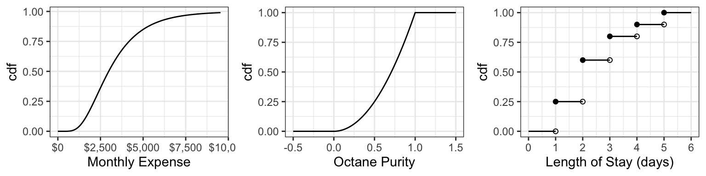
For the discrete cdf, a hollow point is a limiting point – the cdf does not evaluate to that point. Note that usually jump discontinuities in a cdf are connected with a straight vertical line, which we will do from now on after this plot.
In order for a function \(F\) to be a valid cdf, the function needs to satisfy the following requirements:
- Must never decrease.
- It must never evalute to be <0 or >1.
- \(F(x) \rightarrow 0\) as \(x \rightarrow -\infty\)
- \(F(x) \rightarrow 1\) as \(x \rightarrow \infty\).
The empirical cdf (ecdf) for a sample of size \(n\) treats the sample as if they are discrete values, each with probability \(1/n\). Like the cdf of a discrete random variable, the ecdf is also a “step function”. Here is the empirical cdf for the sample of 20 monthly expenses:
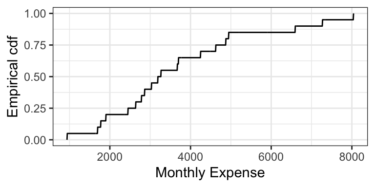
6.2.1.1 Exercise (10 min)
On the board, let’s calculate the cdf’s of the following two distributions (that you’ve seen in lab): \[X \sim \text{Discrete Uniform}(0, 4)\] \[Y \sim \text{Continuous Uniform}(0, 4)\]
6.2.1.2 Evaluating Properties using the cdf (5 min)
It turns out that the mean can be calculated in a fairly simple way from the cdf. It’s the area above the cdf and to the right of \(x = 0\), minus the area below the cdf and to the left of \(x = 0\).
In-class exercise: the cdf of octane purity is \[ F_{\text{Purity}}(x) = \begin{cases} 0, \: x < 0\\ x^2, \: 0 \leq x \leq 1, \\ 1, \: x > 1. \end{cases} \]
- What is \(P(0.5 < \text{Octane} < 0.75)\)?
- What is \(P(0.5 < \text{Octane} \leq 0.75)\)?
- What is \(P(\text{Octane} > 0.75)\)?
- What is the median? 0.25-quantile?
- True or False: knowing the density of a distribution means that we also know the cdf; but knowing the cdf does not imply knowing the density.
6.2.2 Survival Function (2 min)
The survival function \(S\) is just the cdf “flipped upside down”. For random variable \(X\), the survival function is defined as \[S(x) = P(X > x) = 1 - F(x).\]
The name comes from Survival Analysis (covered in DSCI 562), where \(X\) is interpreted as a “time of death”, so that the survival function is the probability of surviving beyond \(x\). Aside from Survival Analysis, the survival function is also useful for Extreme Value Theory.
Here are the survival functions of our three examples:
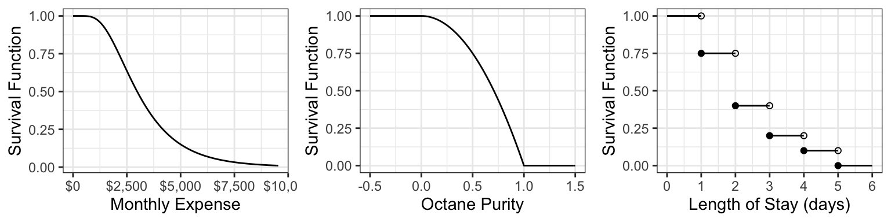
6.2.3 Quantile Function (5 min)
The quantile function \(Q\) takes a probability \(p\) and maps it to the \(p\)-quantile. It turns out that this is the inverse of the cdf! \[Q(p) = F^{-1}(p)\]
Note that this function does not exist outside of \(0 \leq p \leq 1\)! This is unlike the other functions (density, cdf, and survival function), which exist on all real numbers.
Here are the quantile functions of the examples we are working with:
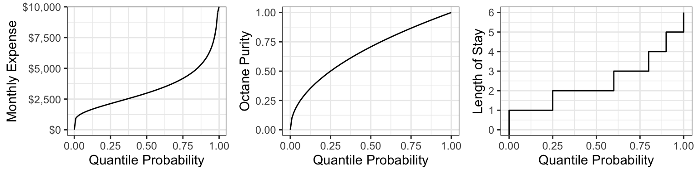
6.2.4 Other ways of depicting a distribution (Optional) (1 min)
There are even more ways to depict a distribution that we won’t be going into, that you might have heard of. Denote \(X\) as a random variable. Some are:
- Moment generating function (useful in mathematical statistics): \[M(t) = E(e^{Xt})\]
- Characteristic function (useful in mathematical statistics): \[\chi(t) = E(e^{Xti}),\] where \(i^2=1\).
- Hazard function (useful in survival analysis; wait for DSCI 562): \[h(t) = \frac{f(t)}{S(t)}\]
6.3 Common Distribution Families: Continuous, Part I (15 min)
Just like for discrete distributions, there are also parametric families of continuous distributions. Again, I think Wikipedia is a great resource for looking up formulas and information about these families.
We’re going to start with two common families for now.
6.3.1 Uniform (3 min)
A Uniform distribution has equal density in between two points \(a\) and \(b\) (for \(a < b\)), and is usually denoted by \[\text{Unif}(a, b).\] That means that there are two parameters: one for each end-point. Reference to a “Uniform distribution” usually implies continuous uniform, as opposed to discrete uniform.
The density is \[f(x) = \frac{1}{b - a} \text{ for } a \leq x \leq b.\] Here are some densities from members of this family:
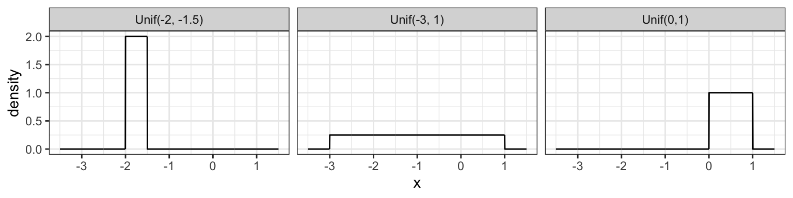
6.3.2 Gaussian / Normal (4 min)
Probably the most famous family of distributions. Has a density that follows a “bell-shaped” curve. Is usually parameterized by its mean \(\mu\) and variance \(\sigma^2\) (or sometimes just the standard deviation). A Normal distribution is usually denoted as \[N(\mu, \sigma^2).\]
The density is \[f(x)=\frac{1}{\sqrt{2\pi \sigma^2}}\exp\left(-\frac{(x-\mu)^2}{2\sigma^2}\right).\] Here are some densities from members of this family:
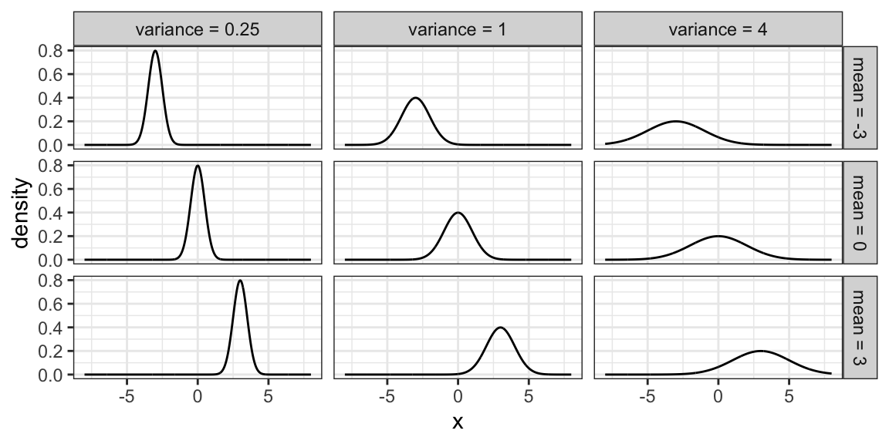
6.3.3 Log-Normal Family
A random variable \(X\) as a Log-Normal distribution if \(\log X\) is Normal. This family is often parameterized by the mean \(\mu\) and variance \(\sigma^2\) of \(\log X\). The Log-Normal family is sometimes denoted, and this course will denote this family, as \[LN(\mu, \sigma^2).\]
Here are some densities from members of this family:
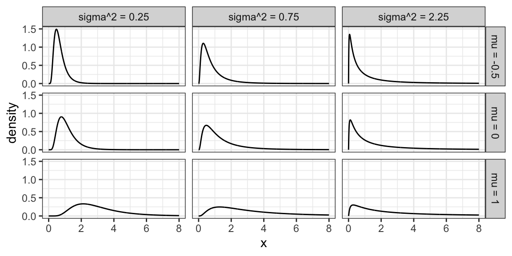
6.3.4 Exponential Family
The exponential family is for positive random variables, often interpreted as “wait time” for some event to happen. Characterized by a “memoryless” property, where after waiting for a certain period of time, the remaining wait time has the same distribution.
The family is characterized by a single parameter, usually either the mean wait time, or its reciprocal, the average rate at which events happen.
The densities from this family all decay starting at \(x=0\) for rate \(\beta\):
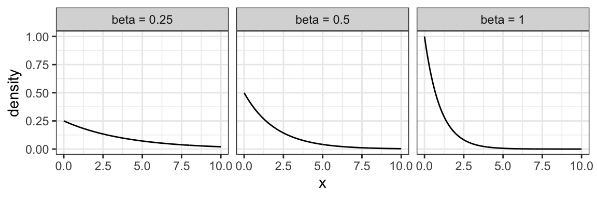
6.3.5 Weibull Family
A generalization of the Exponential family, which allows for an event to be more or less likely the longer you wait. Because of this flexibility and interpretation, this family is used heavily in survival analysis when modelling “time until an event”.
This family is characterized by two parameters, a scale parameter \(\lambda\) and a shape parameter \(k\) (where \(k=1\) results in the Exponential family).
Here are some densities:
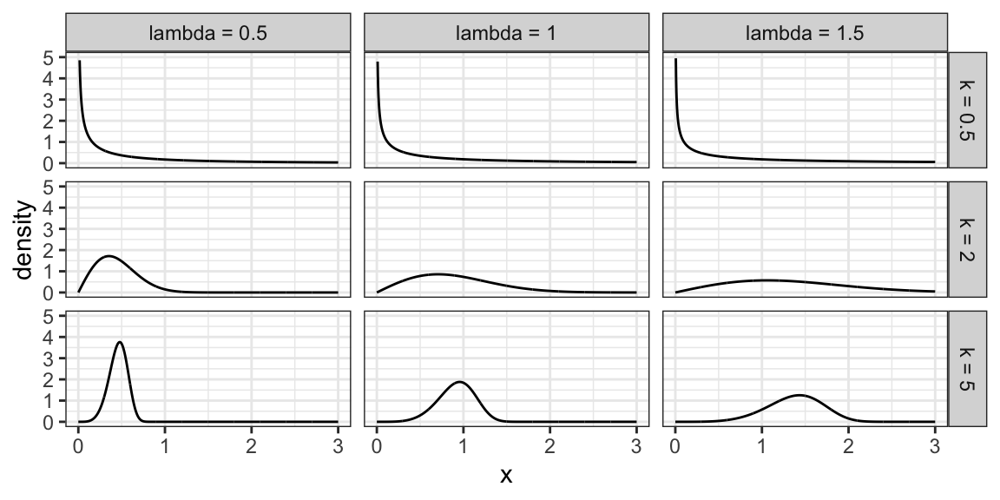
6.3.6 Beta Family
The Beta family of distributions is defined for random variables taking values between 0 and 1, so is useful for modelling the distribution of proportions. This family is quite flexible, and has the Uniform distribution as a special case.
Characterized by two positive shape parameters, \(\alpha\) and \(\beta\).
Examples of densities:
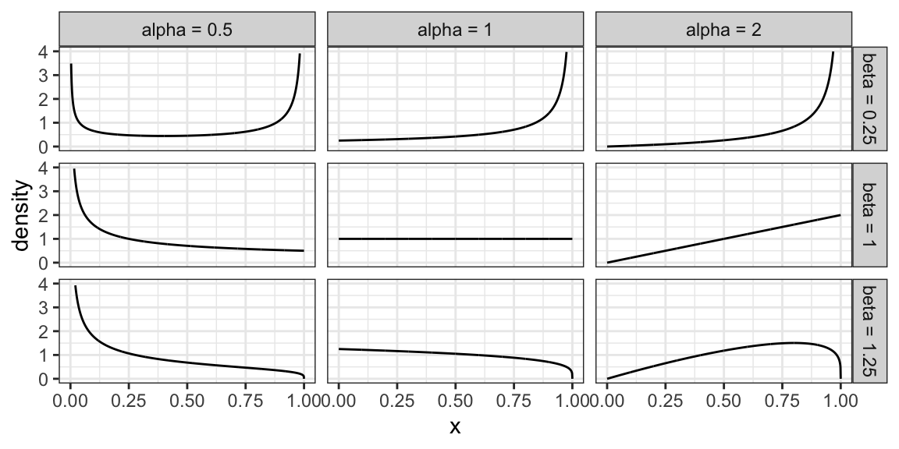
6.3.7 Relevant R functions (8 min)
R has functions for many distribution families. We’ve seen a few already in the case of discrete families, but here’s a more complete overview. The functions are of the form <x><dist>, where <dist> is an abbreviation of a distribution family, and <x> is one of d, p, q, or r, depending on exactly what about the distribution you’d like to calculate.
Possible prefixes <x>:
d: density function - we call this \(p\)p: cumulative distribution function (cdf) - we call this \(F\)q: quantile function (inverse cdf)r: random sample generation
Some abbreviations <dist>:
unif: Uniform (continuous)norm: Normal (continuous)lnorm: Log-Normal (continuous)geom: Geometric (discrete)pois: Poisson (discrete)binom: Binomial (discrete)- etc.
Examples:
The uniform family:
dunif(),punif(),qunif(),runif()
The Gaussian family:
dnorm(),pnorm(),qnorm(),rnorm()
Demonstration:
- What’s the density of the N(2, 4) distribution evaluated at the point \(x = 3\)?
- What’s the cdf of the Unif(0, 1) distribution evaluated at the points \(x = 0.25, 0.5, 0.75\)?
- What’s the median of the Unif(0, 2) distribution?
- Generate a random sample from the N(0, 1) distribution of size 10.
6.4 Multivariate Distributions: Continuous (20 min)
In the discrete case we already saw joint distributions, conditional distributions, marginal distributions, etc. All that stuff carries over. Let’s start with two variables (“bivariate”).
A note on depictions of distributions: There is such thing as a multivariate cdf. It comes in handy in copula theory, which is an optional question in a lab assignment. But otherwise, it’s not as useful as a multivariate density, so we won’t cover it. And, there’s no such thing as a multivariate quantile function.
6.4.1 Multivariate Densities/pdf’s
Recall the joint pmf (discrete) from Lecture 4, between gang demand and length-of-stay:
| Gangs = 1 | Gangs = 2 | Gangs = 3 | Gangs = 4 | |
|---|---|---|---|---|
| LOS = 1 | 0.0017 | 0.0425 | 0.1247 | 0.0811 |
| LOS = 2 | 0.0266 | 0.1698 | 0.1360 | 0.0176 |
| LOS = 3 | 0.0511 | 0.1156 | 0.0320 | 0.0013 |
| LOS = 4 | 0.0465 | 0.0474 | 0.0059 | 0.0001 |
| LOS = 5 | 0.0740 | 0.0246 | 0.0014 | 0.0000 |
Each entry in the table corresponds to the probability of that unique row (LOS value) and column (Gang value). These probabilities add to 1.
For the continuous case, instead of rows and columns, we have an x- and y-axis for our two variables, defining a region of possible values. For example, if two marathon runners can only finish a marathon between 5.0 and 5.5 hours each, and their end times are totally random, then the possible values are indicated by a square in the following plot:
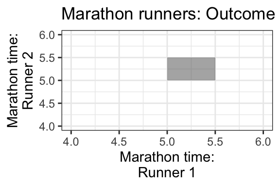
Each point in the square is like an entry in the joint pmf table in the discrete case, except now instead of holding a probability, it holds a density. The density function, then, is a surface overtop of this square (or in general, the outcome space). That is, it’s a function that takes two variables (marathon time for Runner 1 and Runner 2), and calculates a single density value from those two points. This function is called a bivariate density function.
Here’s an example of what a 2D pdf might look like: https://scipython.com/blog/visualizing-the-bivariate-gaussian-distribution/
Notation: For two random variables \(X\) and \(Y\), their joint density/pdf evaluated at the points \(x\) and \(y\) is usually denoted \[f_{X,Y}(x,y),\] or sometimes less rigorously, as just \[f(x, y).\]
6.4.1.1 Mike’s take on notation
There’s a lot of sloppy notation used here. For example I’ll sometimes write \(f(x\mid y=0)\) or \(f(x\mid Y=0)\) which are probably better written as \(f_{X\mid Y=0}(x)\), but it gets tiresome to write that out all the time. You may also see me write things like \(f(x,y=0)\) instead of \(f_{X,Y}(x,0)\); again, this is just shorthand. In the best possible world, the subscripts of \(f\) specify which function you’re actually talking about, and then the arguments are just entered in like any other mathematical function. But it’s often more convenient to just write \(f\) and let the reader figure out from context which function it is, exactly. I certainly wouldn’t want to see \(f(3)\) for a case with two random variables, though, as in that case it’s totally unclear if that’s one of the marginals (\(f_X(3)\) or \(f_Y(3)\)) or who knows what. But \(f(2,3)\) is sort of reasonable - that’s probably the joint density evaluated at \(x=2,y=3\), i.e. \(f_{X,Y}(2,3)\).
6.4.2 Calculating Probabilities
Remember in the univariate continuous case, we calculated probabilities as the area under the density curve. In the bivariate case, since we have a density surface, we can calculate probabilities as the volume under the density surface.
This means that the total volume under the density function must equal 1. Formally, this may be written as \[\int_{-\infty}^{\infty}\int_{-\infty}^{\infty}f(x,y)dxdy=1\]
Example:
- If the density is equal/flat across the entire outcome space, what’s the height of this surface? That is, what does the density evaluate to? What does it evaluate to outside of the outcome space?
- What’s the probability that Runner 1 will finish the marathon before Runner 2?
- To calculate this, first identify the region in the outcome space that corresponds to this event. This is plotted below, as the darker triangle.
- Then, calculate the volume of the space overtop of this region and below the density surface.
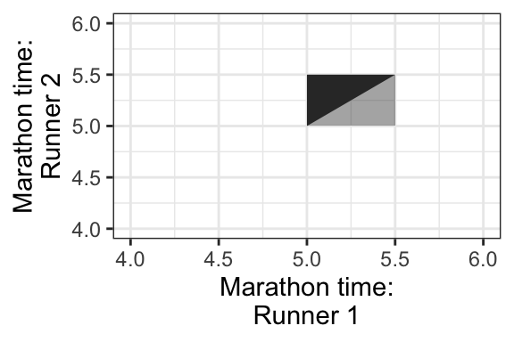
- What’s the probability that Runner 1 finishes in 5.2 hours? Hint: this region is plotted below, indicated in a darker shade.
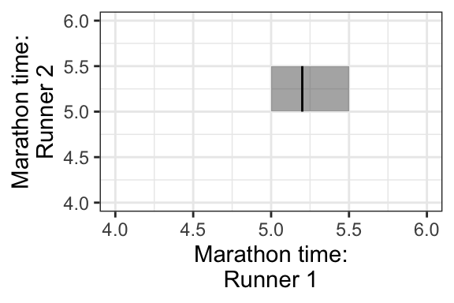
6.5 Conditional Distributions, revisited (15 min)
Remember the formula for conditional probabilities: for events \(A\) and \(B\), \[P(A \mid B) = \frac{P(A \cap B)}{P(B)}.\] But, this is only true if \(P(B) \neq 0\), and it’s not useful if \(P(A) = 0\) – two situations we’re faced with in the continuous world!
6.5.1 When \(P(A) = 0\)
To describe this situation, let’s use a univariate continuous example: the example of monthly expenses.
Suppose the month is half-way over, and you find that you only have $2500 worth of expenses so far! What’s the distribution of this month’s total expenditures now, given this information? If we use the law of conditional probability, we would get a formula that’s not useful: letting \(X = \text{Expense}\), \[P(X = x \mid X \geq 2500) = \frac{P(X = x)}{P(X \geq 2500)} \ \ \ \text{(no!)}\]
This is no good, because the outcome \(x\) has a probability of 0. This equation just simplies to 0 = 0, which is not useful.
Instead, in general, we replace probabilities with densities. In this case, what we actually have is: \[f(x \mid X \geq 2500) = \frac{f(x)}{P(X \geq 2500)} \ \text{ for } x \geq 2500,\] and \(f(x \mid X \geq 2500) = 0\) for \(x < 2500\).
Notice from the formula that the resulting density is just the original density confined to \(x \geq 2500\), and re-normalized to have area 1. This is what we did in the discrete case!
The monthly expense example has expenditures \(X \sim\) LN(8, 0.5). Here is its marginal distribution and the conditional distribution. Notice the conditional distribution is just a segment of the marginal, and then re-normalized to have area 1.
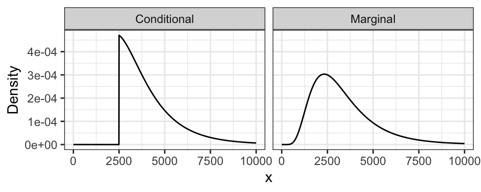
6.5.2 When \(P(B) = 0\)
To describe this situation, let’s use the marathon runners’ example again.
Runner 1 ended up finishing in 5.2 hours. What’s the distribution of Runner 2’s time? Letting \(X\) be the time for Runner 1, and \(Y\) for Runner 2, we’re asking for \(f_{Y|X}(y \mid X = 5.2)\).
But wait! Didn’t we say earlier that \(P(X = 5.2) = 0\)? This is the bizarre nature of continuous random variables. Although no outcome is possible, we must observe some outcome in the end. In this case, the stopwatch used to calculate run time has rounded the true run time to 5.2h, even though in reality, it would have been something like 5.2133843789373… hours.
As before, plugging in the formula for conditional probabilities won’t work. But, as the case when \(P(A) = 0\), we can in general replace probabilities with densities. We end up with \[f_{Y|X}(y \mid 5.2) = \frac{f_{Y,X}(y, 5.2)}{f_X(5.2)}.\]
This formula is true in general \[f_{Y|X}(y \mid x) = \frac{f_{Y,X}(y, x)}{f_X(x)}.\] In fact, this formula is even true for both pdf’s and pmf’s!
We’ll see what this looks like visually next time.